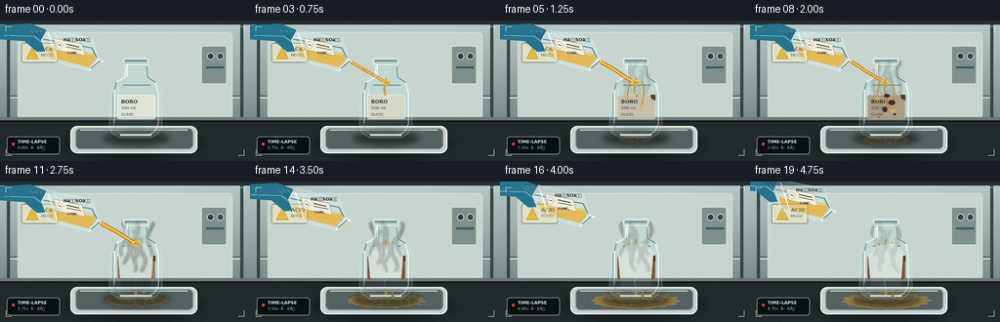
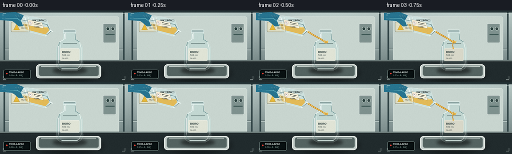
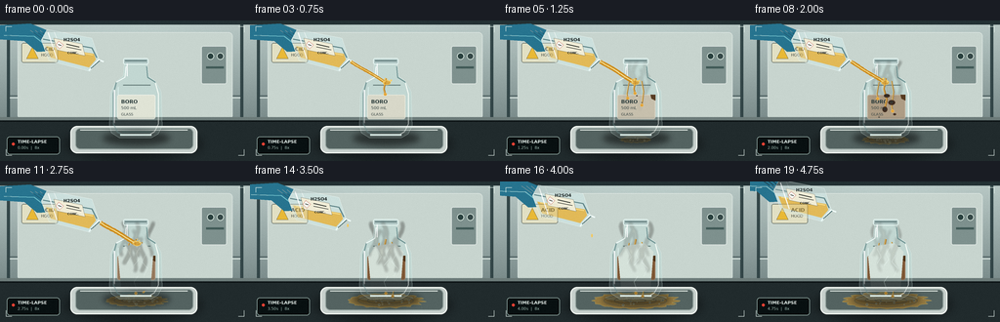
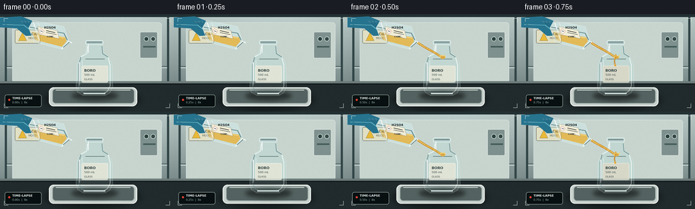

CODING AGENTS AS PIXEL WORLD MODELS
traex/GPT-5.6-Sol · material_0039
点击播放 · 原生 RGB 像素
逐轮保存的候选
回放视频、检查图与代码变化。
每份候选均可单独播放。实际图片检查记录在下方工具轨迹中。
候选 01播放与检查图
点击播放 · 原生 RGB 像素


展开代码变化
--- 上一保存版本
+++ 本次保存版本
@@ -0,0 +1,303 @@
+from pathlib import Path
+import math
+import numpy as np
+from PIL import Image, ImageDraw, ImageFont, ImageFilter
+import artifact_io
+
+# Procedural, deterministic laboratory timelapse. No source imagery is used.
+W, H, N = 256, 144, 20
+S = 4
+WW, HH = W*S, H*S
+ROOT = Path(__file__).resolve().parent
+
+try:
+ FONT = "/usr/share/fonts/truetype/dejavu/DejaVuSans.ttf"
+ FONT_B = "/usr/share/fonts/truetype/dejavu/DejaVuSans-Bold.ttf"
+except Exception:
+ FONT = FONT_B = None
+
+def sc(v): return int(round(v*S))
+def pts(seq): return [(sc(x), sc(y)) for x,y in seq]
+def font(size, bold=False):
+ try: return ImageFont.truetype(FONT_B if bold else FONT, sc(size))
+ except Exception: return ImageFont.load_default()
+
+def ellipse(d, box, **kw): d.ellipse(tuple(sc(v) for v in box), **kw)
+def rect(d, box, **kw): d.rectangle(tuple(sc(v) for v in box), **kw)
+def rr(d, box, r, **kw): d.rounded_rectangle(tuple(sc(v) for v in box), radius=sc(r), **kw)
+def line(d, xy, fill, width=1, joint="curve"): d.line(pts(xy), fill=fill, width=max(1,sc(width)), joint=joint)
+def poly(d, xy, **kw): d.polygon(pts(xy), **kw)
+
+def alpha_comp(base, layer): return Image.alpha_composite(base, layer)
+
+def background(i):
+ # Cool fume-hood environment with subtle light falloff.
+ y, x = np.mgrid[0:HH, 0:WW]
+ top = np.array([181, 196, 193], dtype=float)
+ bot = np.array([82, 100, 101], dtype=float)
+ q = np.clip(y/(HH*1.15),0,1)[...,None]
+ a = top*(1-q) + bot*q
+ glow = 20*np.exp(-((x-WW*.53)**2/(WW*.45)**2 + (y-HH*.26)**2/(HH*.52)**2))[...,None]
+ a += glow*np.array([.65,.78,.74])
+ # Locked camera, almost-static fine sensor texture.
+ rng=np.random.default_rng(811)
+ a += rng.normal(0,1.35,(HH,WW,1))
+ return Image.fromarray(np.clip(a,0,255).astype(np.uint8),"RGB").convert("RGBA")
+
+def draw_set(base):
+ d=ImageDraw.Draw(base,"RGBA")
+ # rear hood seams and side panels
+ rect(d,(0,0,256,4),fill=(35,49,52,255))
+ rect(d,(7,4,10,105),fill=(51,70,72,185))
+ rect(d,(246,4,249,105),fill=(51,70,72,185))
+ line(d,[(10,77),(246,77)],(75,93,94,140),1)
+ line(d,[(10,79),(246,79)],(218,230,225,70),1)
+ # hazy rectangular hood window
+ rr(d,(18,12,238,101),4,fill=(200,213,207,22),outline=(227,236,232,70),width=sc(.6))
+ # rear utility panel
+ rr(d,(206,26,232,65),2,fill=(126,145,142,100),outline=(221,229,225,100),width=sc(.7))
+ ellipse(d,(212,33,219,40),fill=(41,64,62,180),outline=(221,236,227,150),width=sc(.7))
+ ellipse(d,(222,33,229,40),fill=(54,73,72,180),outline=(221,236,227,150),width=sc(.7))
+ rect(d,(211,47,229,49),fill=(66,91,88,180))
+ # bench edge
+ rect(d,(0,99,256,144),fill=(33,43,45,255))
+ rect(d,(0,99,256,102),fill=(108,123,121,255))
+ line(d,[(0,103),(256,103)],(10,17,19,180),1)
+ # warning card on rear, intentionally legible cue
+ rr(d,(22,23,59,43),2,fill=(226,224,196,205),outline=(74,81,72,170),width=sc(.6))
+ poly(d,[(27,39),(33,27),(39,39)],fill=(233,185,55,255),outline=(64,62,47,255))
+ d.text((sc(42),sc(26)),"ACID",font=font(5.2,True),fill=(48,53,49,220))
+ d.text((sc(42),sc(33)),"HOOD",font=font(4.1),fill=(60,66,61,210))
+ # soft shadows on bench
+ shadow=Image.new("RGBA",base.size,(0,0,0,0)); sd=ImageDraw.Draw(shadow)
+ sd.ellipse((sc(65),sc(111),sc(207),sc(142)),fill=(0,0,0,115))
+ shadow=shadow.filter(ImageFilter.GaussianBlur(sc(5)))
+ base=alpha_comp(base,shadow)
+ d=ImageDraw.Draw(base,"RGBA")
+ # white chemical catch tray
+ rr(d,(72,108,202,136),7,fill=(199,208,204,255),outline=(239,244,239,230),width=sc(1.2))
+ rr(d,(77,110,198,132),5,fill=(84,99,97,255),outline=(154,168,164,220),width=sc(1))
+ # interior sheen
+ line(d,[(82,112),(192,112)],(221,229,224,130),1)
+ return base
+
+def acid_pool(base, p, i):
+ if p<=0: return base
+ # Broad translucent, oily pool with an irregular growing outline.
+ layer=Image.new("RGBA",base.size,(0,0,0,0)); d=ImageDraw.Draw(layer,"RGBA")
+ cx=139 + .4*math.sin(i*.7)
+ rx=10+33*p; ry=2.2+6.0*p
+ wob=[]
+ for k in range(48):
+ a=2*math.pi*k/48
+ r=1+0.08*math.sin(k*2.1+0.45*i)+0.04*math.sin(k*4.3-i*.2)
+ wob.append((cx+rx*r*math.cos(a),122+ry*r*math.sin(a)))
+ poly(d,wob,fill=(197,138,38,int(70+70*p)),outline=(244,200,81,int(100+90*p)))
+ ellipse(d,(cx-rx*.72,119-ry*.42,cx+rx*.75,121+ry*.2),fill=(255,221,132,int(55+70*p)))
+ # oily rings
+ for k in range(3):
+ q=(k+1)/4
+ ellipse(d,(cx-rx*q,122-ry*q,cx+rx*q,122+ry*q),outline=(110,68,18,int(30+35*p)),width=sc(.45))
+ # persistent bubbles, phase changes but positions remain coherent
+ for k in range(18):
+ birth=(k%7)/13
+ if p>birth:
+ ang=(k*2.399 + .08*i)
+ bx=cx+math.cos(ang)*rx*(.12+.75*((k*37)%101)/101)
+ by=122+math.sin(ang)*ry*(.2+.55*((k*53)%97)/97)
+ r=.45+((k*17)%7)/8
+ ellipse(d,(bx-r,by-r,bx+r,by+r),fill=(240,206,116,70),outline=(255,234,166,165),width=sc(.35))
+ return alpha_comp(base,layer)
+
+def bottle(base, reaction, i):
+ # Shadow immediately beneath bottle.
+ sh=Image.new("RGBA",base.size,(0,0,0,0)); sd=ImageDraw.Draw(sh,"RGBA")
+ sd.ellipse((sc(105),sc(113),sc(174),sc(128)),fill=(0,0,0,125)); sh=sh.filter(ImageFilter.GaussianBlur(sc(3)))
+ base=alpha_comp(base,sh)
+ layer=Image.new("RGBA",base.size,(0,0,0,0)); d=ImageDraw.Draw(layer,"RGBA")
+ silhouette=[(119,62),(126,57),(127,47),(127,42),(151,42),(151,47),(152,57),(159,62),(165,73),(166,108),(162,116),(155,120),(122,120),(114,115),(112,107),(113,74)]
+ # Transparent body tone; background still reads through.
+ poly(d,silhouette,fill=(190,216,212,32),outline=(224,243,239,210))
+ # thick glass inner edge and base
+ line(d,[(119,63),(116,75),(116,106),(120,114),(126,117)],(122,155,155,115),1.4)
+ line(d,[(159,64),(162,75),(162,106),(158,114),(153,117)],(248,255,249,145),1.1)
+ line(d,[(123,117),(155,117)],(231,248,243,220),2)
+ line(d,[(125,114),(155,114)],(89,127,126,110),1)
+ # shoulders and neck/refraction
+ line(d,[(119,63),(128,58),(129,47)],(247,255,252,170),1)
+ line(d,[(150,47),(151,58),(159,63)],(104,141,142,130),1)
+ rr(d,(126,38.5,152,45),2,fill=(165,191,190,45),outline=(230,246,242,220),width=sc(1))
+ line(d,[(128,41),(150,41)],(85,112,113,180),1)
+ line(d,[(130,44),(130,57)],(255,255,255,160),1.1)
+ line(d,[(117,71),(117,105)],(255,255,255,105),1.2)
+ line(d,[(121,68),(121,94)],(225,248,245,80),.7)
+ # distorted background stripe seen through glass
+ line(d,[(126,66),(154,66)],(82,107,105,60),1)
+ # label reacts strongly: clean white -> amber / charred at impact zone.
+ char=min(1,reaction*1.18)
+ label_col=(224-int(99*char), 228-int(143*char), 214-int(164*char), 218)
+ rr(d,(120,76,159,101),2,fill=label_col,outline=(238-int(80*char),241-int(115*char),230-int(130*char),210),width=sc(.7))
+ # label edges curl under acid
+ if reaction>.2:
+ curl= min(1,(reaction-.2)/.8)
+ poly(d,[(154,76),(159,76),(159,82),(155,80)],fill=(79,49,22,int(130+80*curl)))
+ d.text((sc(124),sc(80)),"BORO",font=font(5.3,True),fill=(40,57,57,220))
+ d.text((sc(124),sc(87)),"500 mL",font=font(4.3),fill=(46,61,61,200))
+ d.text((sc(124),sc(94)),"GLASS",font=font(3.8),fill=(50,63,62,185))
+ if reaction>0:
+ # Acid rivulets over glass, temporally lengthened.
+ paths=[[(139,59),(137,70),(140,81),(137,94),(139,114)],
+ [(145,62),(147,73),(145,88),(148,104),(146,117)],
+ [(132,63),(130,75),(132,88),(130,108)]]
+ for k,path in enumerate(paths):
+ local=max(0,min(1,reaction*1.6-k*.12))
+ if local<=0: continue
+ n=max(2,int(1+(len(path)-1)*local))
+ path2=path[:n]
+ if n<len(path) and n>=2:
+ # Interpolate the advancing front.
+ prev=path[n-1]; nxt=path[n]
+ frac=(local*(len(path)-1))%1
+ path2=path2+[(prev[0]+(nxt[0]-prev[0])*frac,prev[1]+(nxt[1]-prev[1])*frac)]
+ line(d,path2,(174,109,22,130),1.8 if k==0 else 1.2)
+ line(d,[(x-.45,y) for x,y in path2],(255,220,117,150),.45)
+ ex,ey=path2[-1]; ellipse(d,(ex-1.6,ey-1,ex+1.6,ey+2),fill=(230,161,48,135),outline=(255,220,127,150),width=sc(.3))
+ # Carbonized blotches localized to cellulose label, not the whole glass.
+ blotches=[(140,77,5,3),(145,84,7,5),(138,91,6,7),(148,96,5,3),(132,99,3,2)]
+ for k,(x,y,rx,ry) in enumerate(blotches):
+ a=max(0,min(1,(reaction-(.14+k*.045))/.5))
+ if a>0:
+ ellipse(d,(x-rx*a,y-ry*a,x+rx*a,y+ry*a),fill=(53,31,18,int(75+130*a)))
+ if k<3: ellipse(d,(x-rx*a*.5,y-ry*a*.5,x+rx*a*.4,y+ry*a*.25),fill=(15,16,14,int(40+90*a)))
+ # Fine etched/frosted patch and hairline crazing in late timelapse.
+ late=max(0,(reaction-.48)/.52)
+ if late>0:
+ poly(d,[(128,66),(148,63),(157,72),(154,108),(144,114),(124,109),(121,77)],fill=(219,231,222,int(43*late)))
+ cracks=[[(143,67),(139,74),(142,80),(137,86)],[(149,75),(145,82),(151,89),(147,97)],[(130,69),(134,77),(130,84)],[(141,97),(137,103),(140,111)]]
+ for c in cracks: line(d,c,(231,244,237,int(125*late)),.45)
+ return alpha_comp(base,layer)
+
+def steam(base, reaction, i):
+ if reaction<.12: return base
+ # Animated, semi-transparent heat/fume wisps, stronger mid-reaction.
+ strength=min(1,(reaction-.12)/.45) * (1 if i<15 else max(.25,1-(i-14)/7))
+ glow=Image.new("RGBA",base.size,(0,0,0,0)); gd=ImageDraw.Draw(glow,"RGBA")
+ for k in range(7):
+ phase=i*.33+k*1.7
+ x0=127+k*4+2*math.sin(phase)
+ y0=76+(k%3)*8
+ path=[]
+ for j in range(18):
+ yy=y0-j*2.0
+ xx=x0+2.8*math.sin(phase+j*.38)+.12*j*math.sin(k+1)
+ path.append((xx,yy))
+ line(gd,path,(229,235,217,int(21+32*strength)),1.1+(.35*(k%2)))
+ glow=glow.filter(ImageFilter.GaussianBlur(sc(1.15)))
+ return alpha_comp(base,glow)
+
+def pouring_vessel(base, i, pouring):
+ # Beaker shifts/rotates slightly as pouring progresses. Geometry is drawn already tilted.
+ # During final frames the hand/beaker retreats up-left.
+ retreat=max(0,(i-13)/6)
+ dx=-18*retreat; dy=-11*retreat
+ layer=Image.new("RGBA",base.size,(0,0,0,0)); d=ImageDraw.Draw(layer,"RGBA")
+ def P(x,y): return (x+dx,y+dy)
+ # nitrile glove enters upper-left, fingers wrapped around the beaker
+ poly(d,[P(-4,5),P(31,3),P(58,14),P(57,31),P(38,32),P(25,21),P(-4,19)],fill=(39,116,143,255))
+ line(d,[P(4,15),P(35,16),P(48,26)],(101,183,198,155),1)
+ for k in range(3):
+ line(d,[P(31+k*5,10),P(48+k*3,22)],(20,84,111,130),.8)
+ # tipped acid beaker/container, mouth/spout points to bottle
+ vessel=[P(48,9),P(94,18),P(101,39),P(92,52),P(50,41),P(42,20)]
+ poly(d,vessel,fill=(205,226,224,70),outline=(240,251,247,230))
+ line(d,[P(44,19),P(94,28),P(99,38)],(94,132,136,180),1.2)
+ # clear acid inside, oily warm highlight
+ poly(d,[P(47,26),P(96,34),P(98,40),P(91,48),P(52,38)],fill=(229,183,75,112))
+ line(d,[P(50,27),P(95,35)],(255,226,143,190),1)
+ # rim and triangular pouring lip
+ line(d,[P(91,51),P(101,40),P(106,42)],(242,255,251,245),1.4)
+ line(d,[P(93,49),P(102,41)],(73,108,110,170),.7)
+ # strong glass reflections
+ line(d,[P(49,12),P(58,39)],(255,255,255,190),1)
+ line(d,[P(55,11),P(61,26)],(255,255,255,90),.6)
+ # Acid identification label follows vessel visually (fixed skewed polygon)
+ poly(d,[P(55,18),P(84,24),P(87,36),P(58,30)],fill=(241,237,215,230),outline=(100,103,91,180))
+ # simplified rotated-ish label marks and hazard diamond
+ poly(d,[P(60,21),P(65,25),P(61,29),P(57,25)],fill=(245,248,239,255),outline=(188,38,31,255))
+ line(d,[P(59.5,24.5),P(62.5,25.5)],(24,24,22,255),.7)
+ line(d,[P(68,24),P(81,27)],(42,46,42,230),1)
+ line(d,[P(68,27),P(83,30)],(42,46,42,190),.7)
+ d.text((sc(65+dx),sc(17+dy)),"HâSOâ",font=font(4.6,True),fill=(22,30,29,235))
+ d.text((sc(69+dx),sc(31+dy)),"CONC.",font=font(3.2,True),fill=(30,35,32,220))
+ base=alpha_comp(base,layer)
+ # Viscous stream and splash, rendered separately for luminous translucency.
+ if pouring>0:
+ liquid=Image.new("RGBA",base.size,(0,0,0,0)); ld=ImageDraw.Draw(liquid,"RGBA")
+ sx,sy=P(103,42); ex=139+1.2*math.sin(i*.7); ey=64
+ mid=(118+dx*.3,51+dy*.15)
+ # approximate curved stream with many sampled bezier points
+ curve=[]
+ for u in np.linspace(0,1,26):
+ x=(1-u)**2*sx+2*(1-u)*u*mid[0]+u*u*ex
+ y=(1-u)**2*sy+2*(1-u)*u*mid[1]+u*u*ey
+ x+=.45*math.sin(i*.9+u*8)
+ curve.append((x,y))
+ wid=1.6+1.35*pouring+.35*math.sin(i*1.3)
+ line(ld,curve,(205,139,27,205),wid+1.1)
+ line(ld,[(x-.45,y-.35) for x,y in curve],(255,231,151,225),max(.6,wid*.32))
+ # impact crown and airborne beads
+ ellipse(ld,(ex-4,61,ex+4,66),fill=(222,158,38,120),outline=(255,218,112,190),width=sc(.6))
+ for k in range(6):
+ ang=-2.9+k*.47
+ dist=2.5+((i*3+k*5)%7)*.42
+ bx=ex+math.cos(ang)*dist; by=64+math.sin(ang)*dist
+ r=.45+(k%3)*.18
+ ellipse(ld,(bx-r,by-r,bx+r,by+r),fill=(250,209,104,190))
+ base=alpha_comp(base,liquid)
+ elif i>=14 and i<18:
+ # residual drops after main pour stops
+ ld=Image.new("RGBA",base.size,(0,0,0,0)); dd=ImageDraw.Draw(ld,"RGBA")
+ dropy=45+(i-14)*5.2
+ ellipse(dd,(103+dx-.8,dropy-1.8,103+dx+.8,dropy+1.8),fill=(246,201,92,190))
+ base=alpha_comp(base,ld)
+ return base
+
+def overlays(base,i):
+ d=ImageDraw.Draw(base,"RGBA")
+ # clinical time-lapse monitor overlay; unobtrusive but communicates the format.
+ rr(d,(7,119,61,137),3,fill=(8,16,17,145),outline=(189,217,207,80),width=sc(.5))
+ ellipse(d,(12,125,15,128),fill=(230,65,52,235))
+ d.text((sc(18),sc(121.5)),"TIME-LAPSE",font=font(4.5,True),fill=(228,239,234,235))
+ d.text((sc(18),sc(128)),f"{i/4:04.2f}s · 8Ã",font=font(3.9),fill=(166,196,186,220))
+ # frame corners, camera-like but minimal
+ c=(226,239,233,95)
+ line(d,[(6,11),(6,6),(12,6)],c,.6); line(d,[(244,6),(250,6),(250,12)],c,.6)
+ line(d,[(6,132),(6,138),(12,138)],c,.6); line(d,[(244,138),(250,138),(250,132)],c,.6)
+ return base
+
+def render(i):
+ # pouring strength, accumulated reaction, and pool growth follow distinct kinetics.
+ if i<2: pouring=0
+ elif i<5: pouring=(i-1)/3
+ elif i<=12: pouring=1
+ elif i==13: pouring=.45
+ else: pouring=0
+ reaction=max(0,min(1,(i-2)/14))
+ pool=max(0,min(1,(i-3)/13))
+ im=draw_set(background(i))
+ im=acid_pool(im,pool,i)
+ im=bottle(im,reaction,i)
+ im=steam(im,reaction,i)
+ im=pouring_vessel(im,i,pouring)
+ im=overlays(im,i)
+ # Downsample for clean anti-aliased detail, then light deterministic sensor grain.
+ im=im.convert("RGB").resize((W,H),Image.Resampling.LANCZOS)
+ arr=np.asarray(im).astype(np.int16)
+ rng=np.random.default_rng(20261110+i)
+ grain=rng.normal(0,0.72,(H,W,1))
+ arr=np.clip(arr+grain,0,255).astype(np.uint8)
+ return arr
+
+frames=np.stack([render(i) for i in range(N)],axis=0)
+artifact_io.save(frames, ROOT)
+print(f"saved {frames.shape} {frames.dtype}; range={frames.min()}..{frames.max()}")
候选 02播放与检查图
点击播放 · 原生 RGB 像素


展开代码变化
--- 上一保存版本
+++ 本次保存版本
@@ -42,7 +42,7 @@
# Locked camera, almost-static fine sensor texture.
rng=np.random.default_rng(811)
a += rng.normal(0,1.35,(HH,WW,1))
- return Image.fromarray(np.clip(a,0,255).astype(np.uint8),"RGB").convert("RGBA")
+ return Image.fromarray(np.clip(a,0,255).astype(np.uint8)).convert("RGBA")
def draw_set(base):
d=ImageDraw.Draw(base,"RGBA")
@@ -227,7 +227,7 @@
line(d,[P(59.5,24.5),P(62.5,25.5)],(24,24,22,255),.7)
line(d,[P(68,24),P(81,27)],(42,46,42,230),1)
line(d,[P(68,27),P(83,30)],(42,46,42,190),.7)
- d.text((sc(65+dx),sc(17+dy)),"HâSOâ",font=font(4.6,True),fill=(22,30,29,235))
+ d.text((sc(65+dx),sc(17+dy)),"H2SO4",font=font(4.6,True),fill=(22,30,29,235))
d.text((sc(69+dx),sc(31+dy)),"CONC.",font=font(3.2,True),fill=(30,35,32,220))
base=alpha_comp(base,layer)
# Viscous stream and splash, rendered separately for luminous translucency.
@@ -268,7 +268,7 @@
rr(d,(7,119,61,137),3,fill=(8,16,17,145),outline=(189,217,207,80),width=sc(.5))
ellipse(d,(12,125,15,128),fill=(230,65,52,235))
d.text((sc(18),sc(121.5)),"TIME-LAPSE",font=font(4.5,True),fill=(228,239,234,235))
- d.text((sc(18),sc(128)),f"{i/4:04.2f}s · 8Ã",font=font(3.9),fill=(166,196,186,220))
+ d.text((sc(18),sc(128)),f"{i/4:04.2f}s | 8x",font=font(3.9),fill=(166,196,186,220))
# frame corners, camera-like but minimal
c=(226,239,233,95)
line(d,[(6,11),(6,6),(12,6)],c,.6); line(d,[(244,6),(250,6),(250,12)],c,.6)
可观测工具轨迹
实际执行的命令与返回图片。
命令 1exit 0
/bin/bash -lc "cat prompt.txt && printf '\\n--- GENERATION_RULES.md ---\\n' && cat GENERATION_RULES.md && printf '\\n--- task_spec.json ---\\n' && cat task_spec.json"
命令 2exit 0
/bin/bash -lc "printf '%s\\n' '--- files ---'; find . -maxdepth 3 -type f -printf '%p %s bytes\\n' | sort; printf '%s\\n' '--- binaries ---'; command -v ffmpeg || true; command -v python3 || true; command -v blender || true; command -v convert || true; command -v magick || true; command -v node || true"
命令 3exit 0
/bin/bash -lc 'cat artifact_io.py'
命令 4exit 2
/bin/bash -lc "cat > generate.py <<'PY'
from pathlib import Path
import math
import numpy as np
from PIL import Image, ImageDraw, ImageFont, ImageFilter
import artifact_io
# Procedural, deterministic laboratory timelapse. No source imagery is used.
W, H, N = 256, 144, 20
S = 4
WW, HH = W*S, H*S
ROOT = Path(__file__).resolve().parent
try:
FONT = \"/usr/share/fonts/truetype/dejavu/DejaVuSans.ttf\"
FONT_B = \"/usr/share/fonts/truetype/dejavu/DejaVuSans-Bold.ttf\"
except Exception:
FONT = FONT_B = None
def sc(v): return int(round(v*S))
def pts(seq): return [(sc(x), sc(y)) for x,y in seq]
def font(size, bold=False):
try: return ImageFont.truetype(FONT_B if bold else FONT, sc(size))
except Exception: return ImageFont.load_default()
def ellipse(d, box, **kw): d.ellipse(tuple(sc(v) for v in box), **kw)
def rect(d, box, **kw): d.rectangle(tuple(sc(v) for v in box), **kw)
def rr(d, box, r, **kw): d.rounded_rectangle(tuple(sc(v) for v in box), radius=sc(r), **kw)
def line(d, xy, fill, width=1, joint=\"curve\"): d.line(pts(xy), fill=fill, width=max(1,sc(width)), joint=joint)
def poly(d, xy, **kw): d.polygon(pts(xy), **kw)
def alpha_comp(base, layer): return Image.alpha_composite(base, layer)
def background(i):
# Cool fume-hood environment with subtle light falloff.
y, x = np.mgrid[0:HH, 0:WW]
top = np.array([181, 196, 193], dtype=float)
bot = np.array([82, 100, 101], dtype=float)
q = np.clip(y/(HH*1.15),0,1)[...,None]
a = top*(1-q) + bot*q
glow = 20*np.exp(-((x-WW*.53)**2/(WW*.45)**2 + (y-HH*.26)**2/(HH*.52)**2))[...,None]
a += glow*np.array([.65,.78,.74])
# Locked camera, almost-static fine sensor texture.
rng=np.random.default_rng(811)
a += rng.normal(0,1.35,(HH,WW,1))
return Image.fromarray(np.clip(a,0,255).astype(np.uint8),\"RGB\").convert(\"RGBA\")
def draw_set(base):
d=ImageDraw.Draw(base,\"RGBA\")
# rear hood seams and side panels
rect(d,(0,0,256,4),fill=(35,49,52,255))
rect(d,(7,4,10,105),fill=(51,70,72,185))
rect(d,(246,4,249,105),fill=(51,70,72,185))
line(d,[(10,77),(246,77)],(75,93,94,140),1)
line(d,[(10,79),(246,79)],(218,230,225,70),1)
# hazy rectangular hood window
rr(d,(18,12,238,101),4,fill=(200,213,207,22),outline=(227,236,232,70),width=sc(.6))
# rear utility panel
rr(d,(206,26,232,65),2,fill=(126,145,142,100),outline=(221,229,225,100),width=sc(.7))
ellipse(d,(212,33,219,40),fill=(41,64,62,180),outline=(221,236,227,150),width=sc(.7))
ellipse(d,(222,33,229,40),fill=(54,73,72,180),outline=(221,236,227,150),width=sc(.7))
rect(d,(211,47,229,49),fill=(66,91,88,180))
# bench edge
rect(d,(0,99,256,144),fill=(33,43,45,255))
rect(d,(0,99,256,102),fill=(108,123,121,255))
line(d,[(0,103),(256,103)],(10,17,19,180),1)
# warning card on rear, intentionally legible cue
rr(d,(22,23,59,43),2,fill=(226,224,196,205),outline=(74,81,72,170),width=sc(.6))
poly(d,[(27,39),(33,27),(39,39)],fill=(233,185,55,255),outline=(64,62,47,255))
d.text((sc(42),sc(26)),\"ACID\",font=font(5.2,True),fill=(48,53,49,220))
d.text((sc(42),sc(33)),\"HOOD\",font=font(4.1),fill=(60,66,61,210))
# soft shadows on bench
shadow=Image.new(\"RGBA\",base.size,(0,0,0,0)); sd=ImageDraw.Draw(shadow)
sd.ellipse((sc(65),sc(111),sc(207),sc(142)),fill=(0,0,0,115))
shadow=shadow.filter(ImageFilter.GaussianBlur(sc(5)))
base=alpha_comp(base,shadow)
d=ImageDraw.Draw(base,\"RGBA\")
# white chemical catch tray
rr(d,(72,108,202,136),7,fill=(199,208,204,255),outline=(239,244,239,230),width=sc(1.2))
rr(d,(77,110,198,132),5,fill=(84,99,97,255),outline=(154,168,164,220),width=sc(1))
# interior sheen
line(d,[(82,112),(192,112)],(221,229,224,130),1)
return base
def acid_pool(base, p, i):
if p<=0: return base
# Broad translucent, oily pool with an irregular growing outline.
layer=Image.new(\"RGBA\",base.size,(0,0,0,0)); d=ImageDraw.Draw(layer,\"RGBA\")
cx=139 + .4*math.sin(i*.7)
rx=10+33*p; ry=2.2+6.0*p
wob=[]
for k in range(48):
a=2*math.pi*k/48
r=1+0.08*math.sin(k*2.1+0.45*i)+0.04*math.sin(k*4.3-i*.2)
wob.append((cx+rx*r*math.cos(a),122+ry*r*math.sin(a)))
poly(d,wob,fill=(197,138,38,int(70+70*p)),outline=(244,200,81,int(100+90*p)))
ellipse(d,(cx-rx*.72,119-ry*.42,cx+rx*.75,121+ry*.2),fill=(255,221,132,int(55+70*p)))
# oily rings
for k in range(3):
q=(k+1)/4
ellipse(d,(cx-rx*q,122-ry*q,cx+rx*q,122+ry*q),outline=(110,68,18,int(30+35*p)),width=sc(.45))
# persistent bubbles, phase changes but positions remain coherent
for k in range(18):
birth=(k%7)/13
if p>birth:
ang=(k*2.399 + .08*i)
bx=cx+math.cos(ang)*rx*(.12+.75*((k*37)%101)/101)
by=122+math.sin(ang)*ry*(.2+.55*((k*53)%97)/97)
r=.45+((k*17)%7)/8
ellipse(d,(bx-r,by-r,bx+r,by+r),fill=(240,206,116,70),outline=(255,234,166,165),width=sc(.35))
return alpha_comp(base,layer)
def bottle(base, reaction, i):
# Shadow immediately beneath bottle.
sh=Image.new(\"RGBA\",base.size,(0,0,0,0)); sd=ImageDraw.Draw(sh,\"RGBA\")
sd.ellipse((sc(105),sc(113),sc(174),sc(128)),fill=(0,0,0,125)); sh=sh.filter(ImageFilter.GaussianBlur(sc(3)))
base=alpha_comp(base,sh)
layer=Image.new(\"RGBA\",base.size,(0,0,0,0)); d=ImageDraw.Draw(layer,\"RGBA\")
silhouette=[(119,62),(126,57),(127,47),(127,42),(151,42),(151,47),(152,57),(159,62),(165,73),(166,108),(162,116),(155,120),(122,120),(114,115),(112,107),(113,74)]
# Transparent body tone; background still reads through.
poly(d,silhouette,fill=(190,216,212,32),outline=(224,243,239,210))
# thick glass inner edge and base
line(d,[(119,63),(116,75),(116,106),(120,114),(126,117)],(122,155,155,115),1.4)
line(d,[(159,64),(162,75),(162,106),(158,114),(153,117)],(248,255,249,145),1.1)
line(d,[(123,117),(155,117)],(231,248,243,220),2)
line(d,[(125,114),(155,114)],(89,127,126,110),1)
# shoulders and neck/refraction
line(d,[(119,63),(128,58),(129,47)],(247,255,252,170),1)
line(d,[(150,47),(151,58),(159,63)],(104,141,142,130),1)
rr(d,(126,38.5,152,45),2,fill=(165,191,190,45),outline=(230,246,242,220),width=sc(1))
line(d,[(128,41),(150,41)],(85,112,113,180),1)
line(d,[(130,44),(130,57)],(255,255,255,160),1.1)
line(d,[(117,71),(117,105)],(255,255,255,105),1.2)
line(d,[(121,68),(121,94)],(225,248,245,80),.7)
# distorted background stripe seen through glass
line(d,[(126,66),(154,66)],(82,107,105,60),1)
# label reacts strongly: clean white -> amber / charred at impact zone.
char=min(1,reaction*1.18)
label_col=(224-int(99*char), 228-int(143*char), 214-int(164*char), 218)
rr(d,(120,76,159,101),2,fill=label_col,outline=(238-int(80*char),241-int(115*char),230-int(130*char),210),width=sc(.7))
# label edges curl under acid
if reaction>.2:
curl= min(1,(reaction-.2)/.8)
poly(d,[(154,76),(159,76),(159,82),(155,80)],fill=(79,49,22,int(130+80*curl)))
d.text((sc(124),sc(80)),\"BORO\",font=font(5.3,True),fill=(40,57,57,220))
d.text((sc(124),sc(87)),\"500 mL\",font=font(4.3),fill=(46,61,61,200))
d.text((sc(124),sc(94)),\"GLASS\",font=font(3.8),fill=(50,63,62,185))
if reaction>0:
# Acid rivulets over glass, temporally lengthened.
paths=[[(139,59),(137,70),(140,81),(137,94),(139,114)],
[(145,62),(147,73),(145,88),(148,104),(146,117)],
[(132,63),(130,75),(132,88),(130,108)]]
for k,path in enumerate(paths):
local=max(0,min(1,reaction*1.6-k*.12))
if local<=0: continue
n=max(2,int(1+(len(path)-1)*local))
path2=path[:n]
if n<len(path) and n>=2:
# Interpolate the advancing front.
prev=path[n-1]; nxt=path[n]
frac=(local*(len(path)-1))%1
path2=path2+[(prev[0]+(nxt[0]-prev[0])*frac,prev[1]+(nxt[1]-prev[1])*frac)]
line(d,path2,(174,109,22,130),1.8 if k==0 else 1.2)
line(d,[(x-.45,y) for x,y in path2],(255,220,117,150),.45)
ex,ey=path2[-1]; ellipse(d,(ex-1.6,ey-1,ex+1.6,ey+2),fill=(230,161,48,135),outline=(255,220,127,150),width=sc(.3))
# Carbonized blotches localized to cellulose label, not the whole glass.
blotches=[(140,77,5,3),(145,84,7,5),(138,91,6,7),(148,96,5,3),(132,99,3,2)]
for k,(x,y,rx,ry) in enumerate(blotches):
a=max(0,min(1,(reaction-(.14+k*.045))/.5))
if a>0:
ellipse(d,(x-rx*a,y-ry*a,x+rx*a,y+ry*a),fill=(53,31,18,int(75+130*a)))
if k<3: ellipse(d,(x-rx*a*.5,y-ry*a*.5,x+rx*a*.4,y+ry*a*.25),fill=(15,16,14,int(40+90*a)))
# Fine etched/frosted patch and hairline crazing in late timelapse.
late=max(0,(reaction-.48)/.52)
if late>0:
poly(d,[(128,66),(148,63),(157,72),(154,108),(144,114),(124,109),(121,77)],fill=(219,231,222,int(43*late)))
cracks=[[(143,67),(139,74),(142,80),(137,86)],[(149,75),(145,82),(151,89),(147,97)],[(130,69),(134,77),(130,84)],[(141,97),(137,103),(140,111)]]
for c in cracks: line(d,c,(231,244,237,int(125*late)),.45)
return alpha_comp(base,layer)
def steam(base, reaction, i):
if reaction<.12: return base
# Animated, semi-transparent heat/fume wisps, stronger mid-reaction.
strength=min(1,(reaction-.12)/.45) * (1 if i<15 else max(.25,1-(i-14)/7))
glow=Image.new(\"RGBA\",base.size,(0,0,0,0)); gd=ImageDraw.Draw(glow,\"RGBA\")
for k in range(7):
phase=i*.33+k*1.7
x0=127+k*4+2*math.sin(phase)
y0=76+(k%3)*8
path=[]
for j in range(18):
yy=y0-j*2.0
xx=x0+2.8*math.sin(phase+j*.38)+.12*j*math.sin(k+1)
path.append((xx,yy))
line(gd,path,(229,235,217,int(21+32*strength)),1.1+(.35*(k%2)))
glow=glow.filter(ImageFilter.GaussianBlur(sc(1.15)))
return alpha_comp(base,glow)
def pouring_vessel(base, i, pouring):
# Beaker shifts/rotates slightly as pouring progresses. Geometry is drawn already tilted.
# During final frames the hand/beaker retreats up-left.
retreat=max(0,(i-13)/6)
dx=-18*retreat; dy=-11*retreat
layer=Image.new(\"RGBA\",base.size,(0,0,0,0)); d=ImageDraw.Draw(layer,\"RGBA\")
def P(x,y): return (x+dx,y+dy)
# nitrile glove enters upper-left, fingers wrapped around the beaker
poly(d,[P(-4,5),P(31,3),P(58,14),P(57,31),P(38,32),P(25,21),P(-4,19)],fill=(39,116,143,255))
line(d,[P(4,15),P(35,16),P(48,26)],(101,183,198,155),1)
for k in range(3):
line(d,[P(31+k*5,10),P(48+k*3,22)],(20,84,111,130),.8)
# tipped acid beaker/container, mouth/spout points to bottle
vessel=[P(48,9),P(94,18),P(101,39),P(92,52),P(50,41),P(42,20)]
poly(d,vessel,fill=(205,226,224,70),outline=(240,251,247,230))
line(d,[P(44,19),P(94,28),P(99,38)],(94,132,136,180),1.2)
# clear acid inside, oily warm highlight
poly(d,[P(47,26),P(96,34),P(98,40),P(91,48),P(52,38)],fill=(229,183,75,112))
line(d,[P(50,27),P(95,35)],(255,226,143,190),1)
# rim and triangular pouring lip
line(d,[P(91,51),P(101,40),P(106,42)],(242,255,251,245),1.4)
line(d,[P(93,49),P(102,41)],(73,108,110,170),.7)
# strong glass reflections
line(d,[P(49,12),P(58,39)],(255,255,255,190),1)
line(d,[P(55,11),P(61,26)],(255,255,255,90),.6)
# Acid identification label follows vessel visually (fixed skewed polygon)
poly(d,[P(55,18),P(84,24),P(87,36),P(58,30)],fill=(241,237,215,230),outline=(100,103,91,180))
# simplified rotated-ish label marks and hazard diamond
poly(d,[P(60,21),P(65,25),P(61,29),P(57,25)],fill=(245,248,239,255),outline=(188,38,31,255))
line(d,[P(59.5,24.5),P(62.5,25.5)],(24,24,22,255),.7)
line(d,[P(68,24),P(81,27)],(42,46,42,230),1)
line(d,[P(68,27),P(83,30)],(42,46,42,190),.7)
d.text((sc(65+dx),sc(17+dy)),\"HâSOâ\",font=font(4.6,True),fill=(22,30,29,235))
d.text((sc(69+dx),sc(31+dy)),\"CONC.\",font=font(3.2,True),fill=(30,35,32,220))
base=alpha_comp(base,layer)
# Viscous stream and splash, rendered separately for luminous translucency.
if pouring>0:
liquid=Image.new(\"RGBA\",base.size,(0,0,0,0)); ld=ImageDraw.Draw(liquid,\"RGBA\")
sx,sy=P(103,42); ex=139+1.2*math.sin(i*.7),64
mid=(118+dx*.3,51+dy*.15)
# approximate curved stream with many sampled bezier points
curve=[]
for u in np.linspace(0,1,26):
x=(1-u)**2*sx+2*(1-u)*u*mid[0]+u*u*ex
y=(1-u)**2*sy+2*(1-u)*u*mid[1]+u*u*64
x+=.45*math.sin(i*.9+u*8)
curve.append((x,y))
wid=1.6+1.35*pouring+.35*math.sin(i*1.3)
line(ld,curve,(205,139,27,205),wid+1.1)
line(ld,[(x-.45,y-.35) for x,y in curve],(255,231,151,225),max(.6,wid*.32))
# impact crown and airborne beads
ellipse(ld,(ex-4,61,ex+4,66),fill=(222,158,38,120),outline=(255,218,112,190),width=sc(.6))
for k in range(6):
ang=-2.9+k*.47
dist=2.5+((i*3+k*5)%7)*.42
bx=ex+math.cos(ang)*dist; by=64+math.sin(ang)*dist
r=.45+(k%3)*.18
ellipse(ld,(bx-r,by-r,bx+r,by+r),fill=(250,209,104,190))
base=alpha_comp(base,liquid)
elif i>=14 and i<18:
# residual drops after main pour stops
ld=Image.new(\"RGBA\",base.size,(0,0,0,0)); dd=ImageDraw.Draw(ld,\"RGBA\")
dropy=45+(i-14)*5.2
ellipse(dd,(103+dx-.8,dropy-1.8,103+dx+.8,dropy+1.8),fill=(246,201,92,190))
base=alpha_comp(base,ld)
return base
def overlays(base,i):
d=ImageDraw.Draw(base,\"RGBA\")
# clinical time-lapse monitor overlay; unobtrusive but communicates the format.
rr(d,(7,119,61,137),3,fill=(8,16,17,145),outline=(189,217,207,80),width=sc(.5))
ellipse(d,(12,125,15,128),fill=(230,65,52,235))
d.text((sc(18),sc(121.5)),\"TIME-LAPSE\",font=font(4.5,True),fill=(228,239,234,235))
d.text((sc(18),sc(128)),f\"{i/4:04.2f}s · 8Ã\",font=font(3.9),fill=(166,196,186,220))
# frame corners, camera-like but minimal
c=(226,239,233,95)
line(d,[(6,11),(6,6),(12,6)],c,.6); line(d,[(244,6),(250,6),(250,12)],c,.6)
line(d,[(6,132),(6,138),(12,138)],c,.6); line(d,[(244,138),(250,138),(250,132)],c,.6)
return base
def render(i):
# pouring strength, accumulated reaction, and pool growth follow distinct kinetics.
if i<2: pouring=0
elif i<5: pouring=(i-1)/3
elif i<=12: pouring=1
elif i==13: pouring=.45
else: pouring=0
reaction=max(0,min(1,(i-2)/14))
pool=max(0,min(1,(i-3)/13))
im=draw_set(background(i))
im=acid_pool(im,pool,i)
im=bottle(im,reaction,i)
im=steam(im,reaction,i)
im=pouring_vessel(im,i,pouring)
im=overlays(im,i)
# Downsample for clean anti-aliased detail, then light deterministic sensor grain.
im=im.convert(\"RGB\").resize((W,H),Image.Resampling.LANCZOS)
arr=np.asarray(im).astype(np.int16)
rng=np.random.default_rng(20261110+i)
grain=rng.normal(0,0.72,(H,W,1))
arr=np.clip(arr+grain,0,255).astype(np.uint8)
return arr
frames=np.stack([render(i) for i in range(N)],axis=0)
artifact_io.save(frames, ROOT)
print(f\"saved {frames.shape} {frames.dtype}; range={frames.min()}..{frames.max()}\")
PY
python3 generate.py
ls -lh pixels.npz inspection.png transition_check.png index.html frames/00.png frames/19.png"命令 5exit 0
/bin/bash -lc "sed -n '215,270p' generate.py | cat -v"
命令 6exit 0
/bin/bash -lc "sed -n '270,280p' generate.py | cat -v; python3 - <<'PY'
p='generate.py'
s=open(p).read()
s=s.replace('\"HâÂÂSOâÂÂ\"','\"H2SO4\"')
s=s.replace('sx,sy=P(103,42); ex=139+1.2*math.sin(i*.7),64','sx,sy=P(103,42); ex=139+1.2*math.sin(i*.7); ey=64')
s=s.replace('+u*u*64','+u*u*ey')
s=s.replace('f\"{i/4:04.2f}s ÷ 8ÃÂ\"','f\"{i/4:04.2f}s | 8x\"')
open(p,'w').write(s)
PY
python3 generate.py
ls -lh pixels.npz inspection.png transition_check.png index.html frames/00.png frames/19.png"命令 7exit 0
/bin/bash -lc "python3 - <<'PY'
import numpy as np
from PIL import Image
f=np.stack([np.array(Image.open(f'frames/{i:02}.png')) for i in range(20)])
print('shape/dtype:',f.shape,f.dtype)
print('per-frame mean RGB:')
for i in range(20): print(f'{i:02}:', np.round(f[i].mean((0,1)),1), 'diff_prev', 0 if i==0 else round(np.abs(f[i].astype(int)-f[i-1]).mean(),2))
for name,ys,xs in [('bottle',slice(38,121),slice(110,168)),('stream',slice(36,68),slice(96,143)),('pool',slice(109,131),slice(78,199)),('background',slice(50,75),slice(180,220))]:
print(name,'first/last mean',np.round(f[0,ys,xs].mean((0,1)),1),np.round(f[-1,ys,xs].mean((0,1)),1),'change',round(np.abs(f[-1,ys,xs].astype(int)-f[0,ys,xs]).mean(),2))
# verify packed artifact reconstruction
z=np.load('pixels.npz')['pixels']; rec=np.stack([((z[:,:,i,None]>>np.array([16,8,0]))&255).astype(np.uint8) for i in range(20)])
print('pixels reconstruction exact:',np.array_equal(rec,f))
PY"命令 8exit 0
/bin/bash -lc "python3 -m py_compile generate.py artifact_io.py && grep -nP '["'^'"\\x00-\\x7F]' generate.py || true; git status --short 2>/dev/null || true; find frames -maxdepth 1 -type f | wc -l"
命令 9exit 0
/bin/bash -lc "python3 - <<'PY'
from pathlib import Path
p=Path('generate.py')
lines=p.read_text().splitlines()
for j,s in enumerate(lines):
if 'd.text((sc(65+dx),sc(17+dy))' in s:
lines[j]=' d.text((sc(65+dx),sc(17+dy)),\"H2SO4\",font=font(4.6,True),fill=(22,30,29,235))'
elif 'd.text((sc(18),sc(128))' in s:
lines[j]=' d.text((sc(18),sc(128)),f\"{i/4:04.2f}s | 8x\",font=font(3.9),fill=(166,196,186,220))'
elif 'Image.fromarray(np.clip(a,0,255).astype(np.uint8),\"RGB\")' in s:
lines[j]=s.replace('Image.fromarray(np.clip(a,0,255).astype(np.uint8),\"RGB\")','Image.fromarray(np.clip(a,0,255).astype(np.uint8))')
p.write_text('\\n'.join(lines)+'\\n')
PY
python3 generate.py
python3 -m py_compile generate.py
python3 - <<'PY'
import json, os
from pathlib import Path
import numpy as np
from PIL import Image
spec=json.loads(Path('task_spec.json').read_text())
files=sorted(Path('frames').glob('*.png'))
a=np.stack([np.asarray(Image.open(p).convert('RGB')) for p in files])
assert a.shape==(spec['frames'],spec['height'],spec['width'],3)
assert a.dtype==np.uint8
z=np.load('pixels.npz')['pixels']
assert z.shape==(spec['height'],spec['width'],spec['frames'])
assert len(files)==20 and Path('index.html').stat().st_size>0
print('FINAL VALIDATION OK')
print('frames:',a.shape,a.dtype,'min/max',a.min(),a.max())
print('artifacts:',{p:Path(p).stat().st_size for p in ['pixels.npz','index.html','inspection.png','transition_check.png']})
print('generate.py ASCII:',all(ord(c)<128 for c in Path('generate.py').read_text()))
PY"保存候选 2 份；完成命令 9 次；可验证图片返回 0 张。原始 API 响应与完整日志保留在本地。